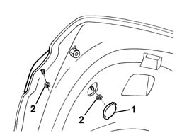
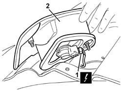

5540E10 rear fog lamp (one), lh or rh - r+r
- Path
- Procedures > 55 ELECTRICAL EQUIPMENT > 5540 EXTERIOR LIGHTING > 5540E rear fof lamps > 5540E10 rear fog lamp (one), lh or rh - r+r
- Kind
- repair procedure (removal / refitting; the operation number is the code)
- Applies to
- all engines; all production periods
- Interactive page
- https://sloeber94.github.io/elrnDB-a147/en/#/3025566
Applies to: all engines; all production periods
 Removing
Removing
 Refitting
RefittingOpen the tailgate.
1. Working on the left end of the tailgate, remove the cover.
2. Unscrew the nuts.

Applies to: all engines; all production periods
1. Move the light cluster slightly and disconnect the electrical connection.
 | Name | Connector |
|---|---|---|
1 | Left rear light cluster (moving part on boot lid) |
2. Recover the light cluster.

Applies to: all engines; all production periods
Refitting
RemovingCheck that the light cluster is not damaged.
Connect the electrical connection
Position the tail-light and secure with the nuts.
Fit the cover.
Check the operation of the rear fog lamps.